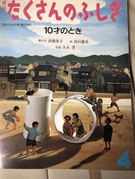
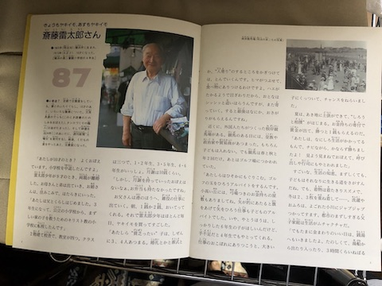
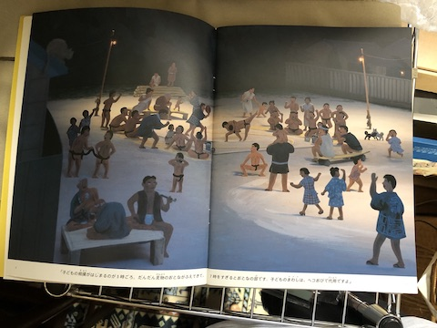
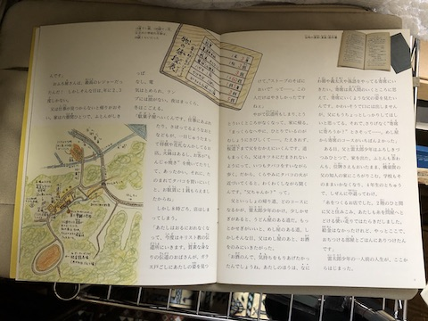
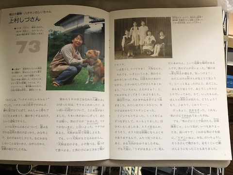
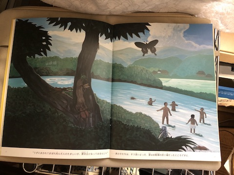
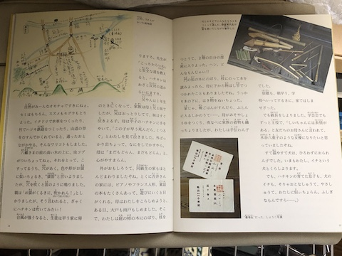

もう読みきれんかもしれんなぁと思いながら、面白そうだと思った本を、わーっと買った。その中の一冊。
アマゾンで調べたら、候補がいくつかあがったのですが、高橋幸子さんのお名前が出ていた、1991年4月号を買いました。







西川祐子さんの『日記をつづるということ』というご本も買いました。以前もご案内したかと思いますが、母の女学生時代の日記を、もう何年ものあいだ、もうちょっとなんとかしたいなぁと思っていたりもする。
こちらは例によって音つき。 小山シヅの女学生日記
これは、育児日記